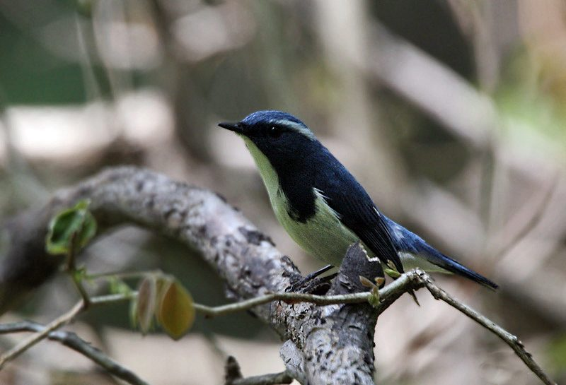

अल्ट्रामरीन फ़िलाईकैचरUltramarine Flycatcher
Ficedula superciliaris · Muscicapidae · BRD-0354

- Scientific name वैज्ञानिक नाम
- Ficedula superciliaris (Jerdon, 1840)
- Family कुल
- Muscicapidae
- Hindi हिंदी
- अल्ट्रामरीन फ़िलाईकैचर
- Local names स्थानीय नाम
- ultramarine flycatcher
- Status here यहाँ की स्थिति
- native
- Movement आवागमन
- Winter visitor
- Known from कहाँ दर्ज
- Others have published records from the wider Awadh–Purvanchal plain, none yet from Basti–Ayodhya अवध–पूर्वांचल से दूसरों के प्रकाशित अभिलेख, बस्ती–अयोध्या से अभी नहीं
- IUCN IUCN
- LC
- Review समीक्षा
- not yet reviewed
When to look कब देखें
Winter visitor शीतकालीन प्रवासी. Expected mainly in January, February, March, October, November, December. मुख्यतः जनवरी, फ़रवरी, मार्च, अक्टूबर, नवंबर, दिसंबर में अपेक्षित।
Breeds in the Himalayas from Kashmir to Nepal; GBIF records in Uttar Pradesh fall between October and March. All migrants and visitors →
Tell it apart from इनसे अलग पहचानें
अल्ट्रामरीन फ़िलाईकैचर / Ultramarine Flycatcher
Ficedula superciliaris (Jerdon, 1840) — Muscicapidae
अल्ट्रामरीन फ़िलाईकैचर — हिमालय से सर्दियों में उत्तर भारत के मैदानों में आने वाली एक छोटी, सुंदर नीली मक्खीमार चिड़िया। बेकर (1924) के अनुसार नर का ऊपरी भाग गहरा नीला होता है, आंख के ऊपर से गर्दन तक चौड़ी सफेद भौंह होती है और पेट सफेद होता है। गर्मियों में जंगलों में शर्मीली रहने वाली यह चिड़िया सर्दियों में बगीचों में बहुत निडर और मिलनसार हो जाती है।
Quick Identification त्वरित पहचान
| Feature | Description | |
|---|---|---|
| Habit | Tiny, active insectivorous flycatcher of open woodland, gardens, and hill forest | |
| Size | Very small passerine, noticeably smaller than a [[verditer_flycatcher | Verditer Flycatcher]] |
| Male Plumage | Dull deep blue above; broad white supercilium from eye to nape; white lower plumage (Baker 1924, p. 221) | |
| Female Plumage | Olive-grey above; fulvous forehead; dull buff below, whitish on centre of abdomen (Baker 1924, p. 222) | |
| Tail | Blackish-brown edged with blue; white bases to lateral rectrices in males (Baker 1924, p. 221) | |
| Soft Parts | Iris dark brown; bill black; legs and feet deep brown or purplish black (Baker 1924, p. 222) |
Field tip: Look for a tiny blue bird with a bold white eyebrow and pure white underparts in quiet groves (Baker 1924).
हिंदी:
नर का ऊपरी हिस्सा नीला और निचला हिस्सा सफेद होता है तथा आंख के ऊपर चौड़ी सफेद भौंह होती है; मादा भूरी-धूसर होती है (बेकर 1924)।
Morphology आकारिकी
Measurements as given by Baker (1924):
| Measurement | Range |
|---|---|
| Biometrics | Total length about 110 mm.; wing 61 to 64 mm.; tail 43 to 45 mm.; tarsus 16 to 17 mm.; culmeii about 10 mm. (Baker 1924 as Cyornis superciliaris superciliaris) |
The Ultramarine Flycatcher is a diminutive flycatcher with prominent sexual dimorphism. Stuart Baker (1924, p. 221) described the adult male: "Whole upper plumage and wing-coverts rather dull, but not very dark blue ; lores and edges of forehead black ; a broad white supercilium from the front of the eye to the nape ; tail blackish brown, edged with blue and with white bases to all but the central pair of feathers ; wing-quills blackish brown edged with blue ; sides of head, neck, and breast blue... remainder of lower plumage white."
The female is olive-grey above, tinged with brown, with a fulvous forehead and white-and-fulvous lores; lower plumage is dull buff, tinged with brown on the breast and whitish on the belly (Baker 1924, p. 222).
हिंदी:
बेकर (1924) के अनुसार इसकी कुल लंबाई लगभग 110 मिमी, पंख 61 से 64 मिमी, पूंछ 43 से 45 मिमी, टार्सस 16 से 17 मिमी और कल्मेन 10 मिमी होता है। नर नीले और सफेद रंग का होता है जबकि मादा भूरी-धूसर होती है।
Behaviour & Ecology व्यवहार और पारिस्थितिकी
Stuart Baker (1924, p. 222) recorded its seasonal change in demeanour: "In Summer rather shy and retiring, frequenting forests, in Winter they come far more into the open and even into gardens when they are very fearless and confiding."
Baker (1924, p. 222) observed: "They are typical little Flycatchers in all their ways." He described its song as "sweet and like that of the Slaty-blue Flycatcher but stronger and better sustained" (Baker 1924, p. 222).
हिंदी:
बेकर (1924) के अनुसार गर्मियों में यह जंगलों में शर्मीली होती है, किंतु सर्दियों में खुले बगीचों में बहुत निडर होकर आती है। इसका गायन मधुर होता है।
Life Cycle / Phenology जीवन चक्र
This species does not breed on the Gangetic plain. GBIF records in Uttar Pradesh fall between October and March.
On its Himalayan breeding grounds, Stuart Baker (1924, p. 222) noted that it commences breeding at the end of April and continues until mid-June, making a nest of moss lined with roots or fibres placed in a tree hole or old woodpecker cavity.
हिंदी:
यह मैदानों में प्रजनन नहीं करती; उत्तर प्रदेश में जीबीआईएफ के रिकॉर्ड अक्टूबर से मार्च के बीच के हैं। हिमालय में यह अप्रैल से जून में घोंसला बनाती है।
Host Plants or Prey आहार
No source opened for this atlas lists the food of this bird.
हिंदी:
इस एटलस के लिए खोले गए किसी भी स्रोत में इस पक्षी के विशिष्ट भोजन की सूची नहीं है।
Predators / Natural Enemies शत्रु
No source opened for this atlas names a specific predator of this bird.
हिंदी:
इस एटलस के लिए खोले गए किसी भी स्रोत में इस पक्षी के किसी विशिष्ट शिकारी का नाम नहीं है।
Agricultural / Human Relevance कृषि प्रासंगिकता
No source opened for this atlas describes this bird's dealings with people. Protected under the Wildlife (Protection) Act, 1972.
हिंदी:
इस एटलस के लिए खोले गए किसी भी स्रोत में लोगों के साथ इस पक्षी के व्यवहार या संबंधों का विवरण नहीं है। यह वन्यजीव (संरक्षण) अधिनियम, 1972 के तहत संरक्षित है।
Expected Locally स्थानीय रूप से अपेक्षित
Not a field record. Written from published accounts for eastern Uttar Pradesh. No confirmed local sighting yet — if you have seen it, that is what the atlas needs.
अभी तक स्थानीय पुष्टि नहीं। यह विवरण प्रकाशित स्रोतों से है, किसी अवलोकन से नहीं।
GBIF holds published records from the wider Awadh–Purvanchal plain, none yet from Basti–Ayodhya.
In Uttar Pradesh, published winter records are known from Lucknow (fourteen records) and Lakhimpur Kheri (three records), reported by twelve observers between 2003 and 2025 during the winter months of October to March.
A first record would be a photograph of the bird with place and date, sent through the About page.
Distribution वितरण
Stuart Baker (1924, p. 222) recorded the breeding range as "The Himalayas from the Afghan Frontier to Garhwal and Western Nepal", noting that in winter it wanders "as far South as the Central Provinces".
In Uttar Pradesh, winter occurrences are published from Lucknow and Lakhimpur Kheri. These represent seasonal wintering individuals on the Gangetic plain.
हिंदी:
बेकर (1924) के अनुसार इसका प्रजनन क्षेत्र पश्चिमी हिमालय है और सर्दियों में यह मध्य भारत तक प्रवास करती है। उत्तर प्रदेश में इसके शीतकालीन रिकॉर्ड लखनऊ और लखीमपुर खीरी से हैं।
Research Questions शोध प्रश्न
- What are the earliest arrival and latest spring departure dates of Ultramarine Flycatchers in urban gardens of Lucknow and the northern Terai? / लखनऊ और तराई क्षेत्र के उद्यानों में इसके आगमन और प्रस्थान की सटीक तिथियां क्या हैं?
- Does the species show fidelity to specific winter foraging territories across consecutive migration seasons? / क्या यह मक्खीमार लगातार वर्षों में एक ही शीतकालीन क्षेत्र में लौटती है?
- How do foraging heights compare between this species and the Tickell's Blue Flycatcher when overwintering in the same area?
- What proportion of winter foraging time is spent in understorey shrubs versus canopy foliage?
- Can amateur photographers document female plumage variations in wintering birds? (Observers can photograph underparts of dull-plumaged flycatchers in winter parks.)
Similar Species मिलती-जुलती प्रजातियाँ
| Species | How to tell apart | हिंदी | |
|---|---|---|---|
| [[verditer_flycatcher | Verditer Flycatcher]] (Eumyias thalassinus) | Larger size, entirely bright electric copper-blue plumage without white eyebrow or belly, and black eye-patch | वर्डिटर फ़िलाईकैचर |
| [[blue_throated_blue_flycatcher | Blue-throated Blue Flycatcher]] (Cyornis rubeculoides) | Blue upperparts with dark blue throat, orange-rufous breast, and no white supercilium | ब्लू-थ्रोटेड फ्लाईकैचर |
| [[tickells_blue_flycatcher | Tickell's Blue Flycatcher]] (Cyornis tickelliae) | Pale blue forehead, bright orange-rufous throat and breast contrasting with white belly, and no white eyebrow | टिकेल्स ब्लू फ़िलाईकैचर |
Field rule: The combination of small size, bright white supercilium, dark blue upperparts, and white underparts with blue breast sides immediately distinguishes the male Ultramarine Flycatcher (Baker 1924).
हिंदी:
वर्डिटर फ्लाईकैचर पूरी तरह नीला होता है; अल्ट्रामरीन फ्लाईकैचर का पेट सफेद होता है और आंख पर सफेद भौंह होती है।
Taxonomy & Classification वर्गीकरण
Original description. Described by Thomas Caverhill Jerdon in 1840 in Madras Journal of Literature and Science (Vol. 11, p. 16), under the basionym Muscicapa superciliaris. The type locality is Northern Ghats of India.
Synonyms and historical names. Stuart Baker (1924, p. 221) and Blanford and Oates treated the species under the genus Cyornis (Cyornis superciliaris). It is now placed in the genus Ficedula.
Subspecies. Stuart Baker (1924, pp. 221–222) recognized Cyornis superciliaris superciliaris from the western Himalayas and Cyornis superciliaris astigma (which lacks the white supercilium) from Nepal and eastwards.
Family and order placement. Order Passeriformes, family Muscicapidae (Old World flycatchers), genus Ficedula.
IUCN status rationale. Evaluated as Least Concern (LC) by the IUCN Red List (BirdLife International 2020).
हिंदी:
जेर्डन ने 1840 में इसका वर्णन किया था। बेकर ने इसे Cyornis superciliaris के तहत दर्ज किया था। यह मस्किकैपिडी कुल का सदस्य है और संकटमुक्त (LC) है।
Photo Gallery फोटो गैलरी
No photos yet — add field photos to media/species/ultramarine_flycatcher/ and run node scripts/sync_photos.js.
Photos needed आवश्यक फोटो
- [ ] Adult male showing white supercilium and blue-and-white plumage on a garden perch (बगीचे में टहनी पर बैठे नर की सफेद भौंह और नीले रंग का दृश्य)
- [ ] View of female showing olive-grey upperparts and buff underparts (मादा के धूसर ऊपरी और हल्के निचले हिस्से का दृश्य)
References संदर्भ
- Jerdon, T. C. (1840). Madras Journal of Literature and Science. Vol. 11. Vepery Mission Press, Madras, p. 16 (as Muscicapa superciliaris).
- Baker, E. C. S. (1924). The Fauna of British India, Including Ceylon and Burma. Birds. Vol. 2. 2nd ed. Taylor & Francis, London, pp. 221–222 (as Cyornis superciliaris superciliaris).
- Ali, S. & Ripley, S. D. (1987). Compact Handbook of the Birds of India and Pakistan. 2nd ed. Oxford University Press, New Delhi.
- Grimmett, R., Inskipp, C. & Inskipp, T. (2011). Birds of the Indian Subcontinent. 2nd ed. Christopher Helm, London.
- Rasmussen, P. C. & Anderton, J. C. (2012). Birds of South Asia: The Ripley Guide. 2nd ed. Smithsonian Institution and Lynx Edicions, Washington, D.C. and Barcelona.
- BirdLife International (2020). Ficedula superciliaris. The IUCN Red List of Threatened Species 2020: e.T22709406A181848930. doi:10.2305/IUCN.UK.2020-3.RLTS.T22709406A181848930.en
- GBIF Occurrence Data — Ficedula superciliaris, India (2025).
Source file: species/fauna/birds/ultramarine_flycatcher.md